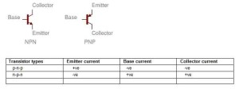

Actually the full form of mosfet is metal oxide semiconductor field effect transistor and this device is a widely used electronics component and belongs to field effect transistor category. The word biasing means providing power in the proper way. As mosfet is a voltage controlled device so proper biasing by voltage ensures the accurate operation of mosfet as well as to ensure that mosfet is in saturation at all operation times. In mosfet, source and drain are the two conducting region but this device is consist of three terminals namely gate, source and drain. A separate voltage source is needed for biasing purpose and simply like any other semiconductor device, a mosfet also have some different types of layers inside of it. Biasing is done by applying a positive voltage to the drain terminal and a gate voltage at the gate terminal. This voltage must lie in between a certain limiting value and a current limiting resistive load is connected for that purpose.

So, it is quite easy to understand that, more potential difference across the resistive load leads to generate more drain current. The entire operation of mosfet is depended upon proper biasing so, it is very important to design any circuit using mosfet. In normal operation of transistor emitter –base junction is forward biased and base-collector junction is called reversed biased. Signs of current are given below for normal transistor operation.
 by
by